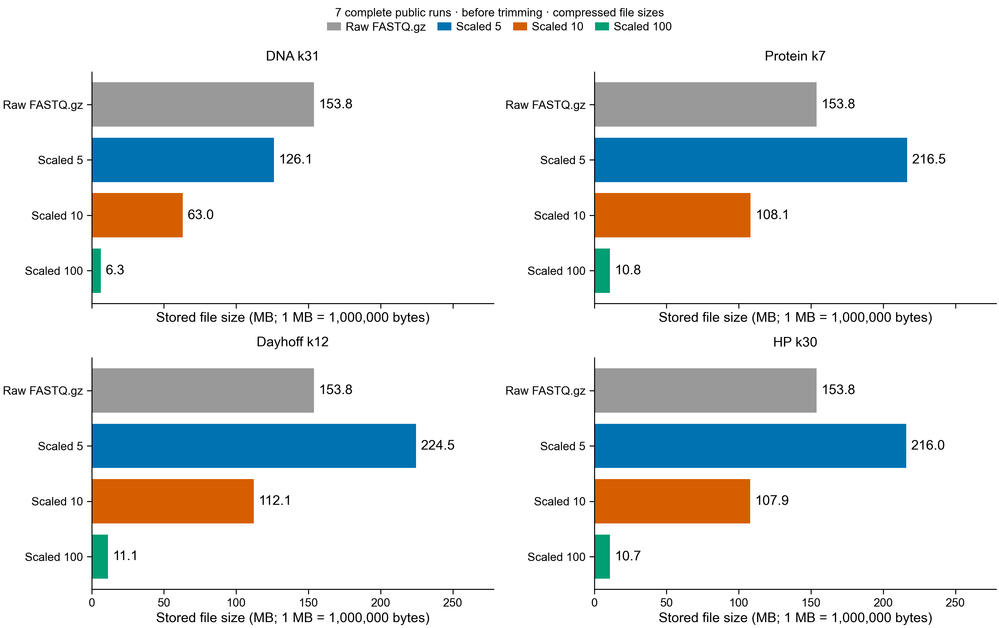

public runs in the dated inventory
Find sequence changes without a reference, recover their DNA context, and look for protein candidates. Then ask where those sequences appear in other bivalve RNA-seq studies.
The results currently displayed below are a pilot using the first 1,000,000 read pairs per library, not the complete input. All six complete libraries contain 153,671,701 pairs; 153,628,178 pairs remain after trimming. Full-depth baseline processing is complete. Full-depth DE-kupl is running; SPLASH job 49214375 completed in 16 minutes. It tested the complete trimmed read 1 from each library; this differs from the earlier two-mate prefix pilot. All 5,538,699 anchors with adjusted P < 0.05 are selected for extension in 554 batches (job 49221554), using both complete mates for sequence context. Extensions and full-depth public matches are pending.
SPLASH tests which sequences occur after an anchor. DE-kupl tests whether DNA-word counts differ between conditions. Both use the same trimmed libraries and share downstream protein annotation.
The nf-core workflow finished. A separate check counts synchronized pairs and measures their lengths before discovery uses them.
Reads were trimmed before analysis; quality checks passed.
Percentage of raw reads flagged by Trim Galore. Read 1 is the upper circle; read 2 is the lower square for each library. The minimum adapter overlap is only 1 bp, so these percentages do not mean that this much of the sequence was adapter DNA.
All 12 raw files and all 12 trimmed files passed the reported per-base quality, adapter-content, and overrepresented-sequence checks.
Trimmed length distributions have a warning because trimming produces unequal read lengths. The length plot below shows the independently measured distribution.
Trim Galore 2.3.0: quality 20, minimum length 20 bp, error rate 0.1, adapter overlap 1 bp. Auto-detection chose the Illumina adapter. The release also enabled its poly-G trimming behavior.
SPLASH needs 31 bp anchor + 0 bp gap + 31 bp target: 62 bp in one read. This differs from the standard 20 bp trimming threshold. Mates are never joined to create a 62 bp sequence.
| Biological pool | Condition | Public run | Raw pairs | Trimmed pairs | Discarded pairs | Bases removed |
|---|
| Read preprocessing | Tested anchors | Significant | Selected | Extended anchors | No extension output |
|---|
Significance uses Benjamini–Yekutieli correction at 0.05. Selection is corrected p-value, then anchor sequence. The untrimmed rerun reproduces the previous significant-anchor and extension totals; the original pilot's protein assignments remain unaudited.
Each finding will retain its pipeline, original statistics, sample counts, recovered DNA, translation coordinates, and protein candidates. A short sketch match is candidate evidence, not a validated function.
The supplied example reports a separate, untrimmed 5M-pair Rust/PyDESeq2 abundance experiment. Those figures are historical. They are not SPLASH results, DE-kupl results, or results of this trimmed 1M-pair pilot.
The original actual-SPLASH scores and manifest were absent from the packages. A new matched untrimmed run now reproduces its 214,025 significant anchors and 190 extended anchors. The earlier protein-assignment totals are not yet audited. The existing demo has not been replaced.
The shortlist is not ready. DNA extensions are sequence candidates; missing protein annotations have not yet been established. Whole-proteome annotation includes unchanged proteins so experimental changes do not define eligibility.
Validated SPLASH composition, recovered DNA and supporting read counts are available. Protein identity, coding completeness and gene-model reliability remain under investigation.
Protein alignments, families and domains will be shown separately, with database versions, coverage, identity and ambiguity. A protein match will not be presented as functional validation.
Up to 10–20 nonredundant candidates will be investigated only when the evidence supports them. Each card will state competing explanations and an experiment whose possible outcomes distinguish them.
Known-gene and expression/length-matched unchanged controls are required for comparison. Blinded cards will be prepared for review after candidates are selected.
Check artifacts and sequence support first. Keep reliable identity, per-pool consistency, recoverable coding context, missing annotation, and assay feasibility separate. Group overlapping fragments before counting genes. SPLASH nonsignificance cannot define an unchanged-expression control.
Compare standard sequence/orthology/domain annotation, added remote-homology evidence, and then experimental context plus model checks on the same candidates. More labels do not establish higher accuracy.
Fragment-to-protein evidence job 49189755 and whole-reference-proteome Swiss-Prot alignment job 49189847 were submitted. Submission is not successful annotation. DE-kupl, orthology/domain completion, structure searches and the deep shortlist remain pending.
The new collection will cover public bivalve RNA-Seq runs, preserving one sketch set per run. Matching studies can give tissue, condition, and species context. Agreement on the same reads is corroboration, not independent validation.
One complete trimmed public run passed independent signature, result, loss-set and self-search checks at both scales. A search-filter issue was reproduced and corrected with an explicit zero threshold. The corrected validation session disconnected, and SSH authentication is currently unavailable; production worker resubmission awaits access; eight complete untrimmed public runs are indexed and have partial query searches. 181 runs lack ENA FASTQ URLs. The size estimate excludes missing file sizes.
__PUBLIC_RESULTS__Measured totals for seven complete public runs, before trimming. The same 153.8 MB of gzip-compressed FASTQ is repeated as the reference in each panel; it is stored only once. Sketch values are actual ZIP archive sizes and exclude searchable indexes and search results.

All four encodings together use 783.0 MB at scaled 5, 391.1 MB at scaled 10, and 38.9 MB at scaled 100. The full archive compares scaled 10 and 100; short queries without retained hashes remain unsearchable, not negative matches.
Download measured file sizes · TSVPublic SRA searches compare scaled 10 and 100. Scaled 10 sketches are temporary for comparison; scaled 100 sketches and both search-result tables are retained. Swiss-Prot uses scaled 5. Short queries with empty sketches remain unassigned.
The public Branchwater service describes an index of 1,161,119 SRA metagenomes, not all public RNA-seq. Its sparse sketches are designed for much longer DNA queries. A negative search there does not establish absence of a short oyster sequence.
The bivalve inventory is defined by tax_tree(6544) AND library_strategy="RNA-Seq". Runs not retrieved, not indexed, private, or absent from that dated inventory stay outside the search denominator.
Exact DNA identity, protein-family evidence, experimental association, and coding completeness belong in separate fields. Six-frame translations are candidate fragments, not experimentally observed proteins.
Protein candidates need alignment or domain support, including coverage, identity, and tied matches. Noncoding and unassigned sequences are valid outcomes.
SPLASH tests anchor–target composition with Benjamini–Yekutieli correction at 0.05. It does not directly test breed-versus-wild gene abundance.
DE-kupl is configured for replicate-aware DESeq2 testing, without transcript masking: count ≥5 in ≥3 samples, adjusted p ≤0.05, and absolute log2 fold change ≥log2(1.5). These are k-mer statistics, not gene p-values.
Completed nf-core allocation: 4 min 14 s; measured peak resident memory 11.2 GiB. The pipeline reports 28 successful tasks. Alignment and pseudoalignment were disabled; trimming, read checks, reference preparation, and reporting ran.
Pinned tools: nf-core/rnaseq 3.27.0, Nextflow 25.10.4, Trim Galore 2.3.0, FastQC 0.12.1, MultiQC 1.35, SPLASH/Compactors 2.11.9, sourmash 4.9.4, and DE-kupl container 1.3.5 by digest.
DE-kupl has not run: container conversion failed in the site's squashfs tool. SPLASH+ interpretation has not run; it needs compatible genome and splice-annotation resources beyond SPLASH and Compactors.
Shared preprocessing is counted once. Discovery, extension, annotation, and archive indexing will have separate resource records.
Zhang et al. 2019 · oyster growth transcriptome study ↗
nf-core/rnaseq 3.27.0 ↗ · SPLASH 2.11.9 source ↗
Upstream DE-kupl ↗ · SPLASH+ interpretation ↗
NCBI oyster_v9 reference assembly ↗
This page reports checked outputs and explicit pending stages. It does not infer successful jobs from submission, treat fragments as independent replicates, or replace the earlier demo.